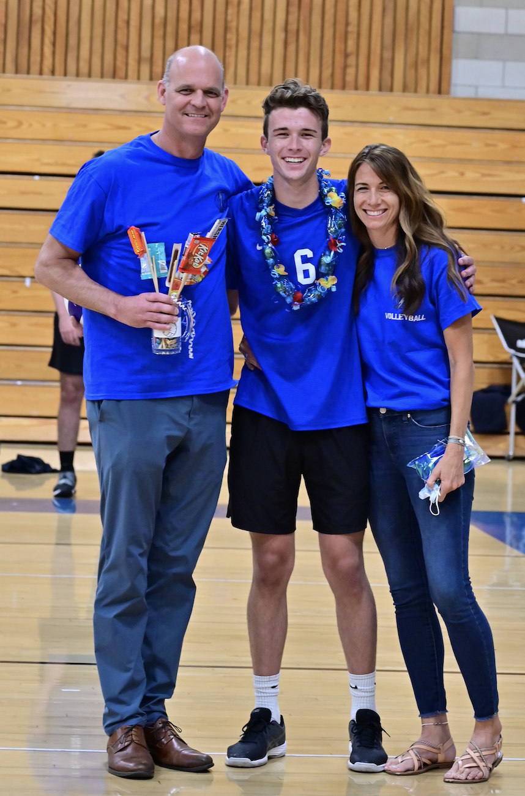
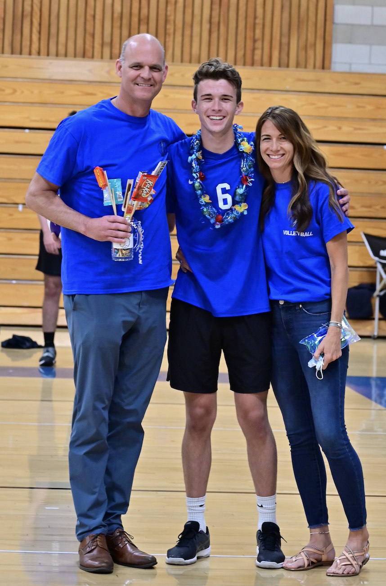
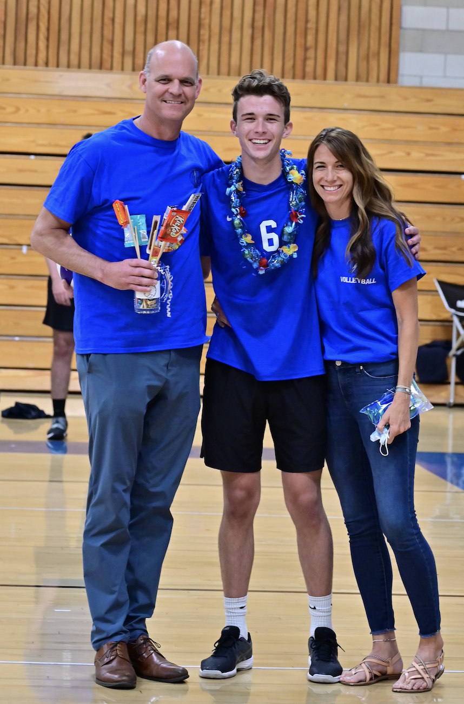

Growing up, my family and I played volleyball a lot for fun. In California, it is a common sport for both men and women. In middle school, I joined the volleyball team, and we only won one game the entire season. It was terrible. But I truly do love the sport so I kept playing. I went on to Junior Varisty and Varsity volleyball, and I even won the "Best Offensive Player" award and was on the First Team All-League.

Volleyball has been a great stress reliever for me in college as well. I am in a class for volleyball, I joined voleyball intramurals, and I continue to play with my family. It truly is the greatest sport in the world.
Volleyball Fundamentals